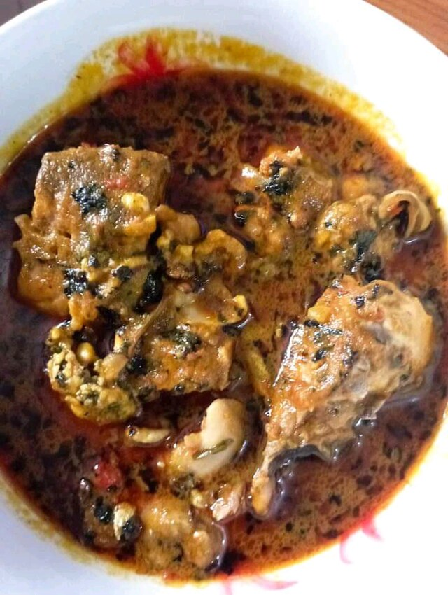

Banga Soup

Photo by: Aderiqueza
/ CC BY-SA 4.0
Description
Banga soup is a rich, flavorful palm nut soup originating from
the Niger Delta region of Nigeria. It is made with fresh palm fruit
extract, a variety of meats and fish, and a special blend of spices.
It is distinct from the Igbo version, called Ofe Akwu, by the unique
spices used and its preferred accompaniments.
Ingredient
- 800 g palm fruit concentrate
- 1 tablespoon banga spice you can buy ready mix or simply make your
own by blending Ataiko and Irugeje in a dry mill
- 1-2 tablespoons Beletete leaves
- 1 Oburunbebe stick
- 6 medium size fresh catfish steak washed and gutted
- 800 g assorted beef I used shaki, ponmo and cow-leg
- 1 cup fresh shrimps
- ½ cup dried prawns
- 2-3 scotch bonnet blended
- 1 cup dried cod panla washed and shredded
- 1 cup periwinkle optional
- 2 Seasoning cubes or use as desired about 1 teaspoon stock powder
- Salt to taste
- 1 small onion
- 1.6 litre water that includes the quantity of beef stock used
Steps
- Season assorted beef and dried fish with salt, onions, seasoning cubes,
add water and bring to boil till tender.
(Separate meat from stock and reserve stock)
- Place a large pan on medium heat, add palm nut fruit and
dilute with warm water double of the amount of palm fruit used.
I used 800g of palm fruit so I added 1.6ltr of water to the pan.
You can add any tough beef at this point, this will help soften
it more and the flavour infuses as well
- Stir till well combined and bring to boil for about 20 minutes. Don’t
cover the pan with a lid at this point as it would boil over.
Put a wooden spoon across the pot to stop this from happening
- At this point, you will see the palm fruit extract bubbling and starting
to thicken, and the oil floating on top of the soup
- Add blended scotch bonnet, assorted beef, periwinkle and cook for
another 10-15 minutes
- Add Banga spice, oburunbebe stick, ground crayfish and cook for another 10 minutes.
The Banga spice adds a very rich aroma to the soup and you can just smell it.
Check for salt and seasoning, dilute the soup with reserved stock if it is too thick.
(Stir in between to avoid soup sticking to the bottom of the pan)
- I left the catfish till the tail end of my cooking because it doesn’t
take time to cook at all.
- Add fresh fish and shrimps to the soup, add the beletete leaves or bitter leaf
and leave to cook on low heat for another 10-12 minutes.
(if you need to stir at any point after you have added the fresh fish,
you will need to be careful or you can simply hold the pan on its 2 handles with
a napkin and give it a little twirl)
- Your soup is ready to be served with starch, Eba, fufu, pounded yam or any other
swallow of your choice
Home